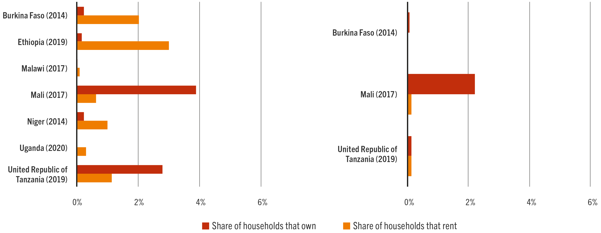

We cannot manage what we cannot measure. A central part of the programmatic work of the Food and Agriculture Organization of the United Nations (FAO) pursues the reduction of rural poverty – which is also at the heart of the first Sustainable Development Goal (SDG). Thus, proper management and delivery of this programmatic work demands proper measurement of the problem. In this vein, the first chapter of this guide aims to provide a clear understanding of the methodological implications for constructing a poverty measure, including monetary and multidimensionally-based measures. While only a few users of this guide will be in a situation where the creation of a new, or revised, national poverty measure is required from them, it is important that those using poverty measures master the concepts behind them and understand the differences between one or other measure, to use them adequately when providing technical support, contributing to project design and performing similar tasks, particularly in rural settings. For those users involved in data collection processes, including for informing project design or evaluation, this chapter also provides guidance on which measure of poverty is most suitable to rely upon, according to the different objectives and contexts where the project is situated. Finally, for the advance user, the chapter provides further information on the characteristics and validity offered by the different measures so as to better inform their selection. The annexes provide more information on procedures to build income and consumption aggregates from household survey microdata and on different methodological alternatives that can be used to set a poverty line.
1.1 INTRODUCTION
The measurement of poverty is preceded by a longstanding tradition in empirical economics. It is not surprising that a wealth of well-developed economic literature on poverty measurement exists. Even if this is the case, there is still no widespread agreement among researchers on the best methodology to measure poverty, and the characteristics of rural settings makes poverty measurement in them more challenging. This is largely due to a lack of agreement on the definition of welfare 1 that should underpin the measurement of poverty. Nevertheless, the steps involved in the empirical implementation of the different poverty measurement approaches are very similar. In a nutshell, that is to say: the poor are identified by comparing, for all individuals of a given population, an indicator capturing household/individual welfare to a threshold representing a certain minimum level of welfare; those whose welfare indicator falls below the minimum are aggregated into an overall poverty measure that separates them from the non-poor population.
Deciding on the best approach to measure poverty is even more complicated when the measurement exercise is implemented in rural populations. Most empirical approaches to poverty measurement were primarily developed to measure poverty in urban settings, and they are not necessarily useful or relevant for purposes of measuring poverty in rural areas. Conceptually, there are clear differences among rural and urban livelihoods, and urban-based definitions of welfare do not capture the diversity of rural lifestyles. As stated by Conconi et al. (2019):
Rural poverty is characterized by a myriad of intertwined challenges that make it distinct from urban poverty […] Rural people live differently, derive their income differently; may live in remote and sparsely populated areas, such as forests and savannahs, and depend on agricultural income and on the management of natural resources […].
The United Nations recognized that lack of agreement on poverty measurement at the time of defining the Sustainable Development Goals (UN, 2021). In fact, the first SDG makes explicit in its text, targets, and indicators that there are different useful and valid ways in which poverty can be conceptualized and measured.
SDG 1: End poverty in all its forms and everywhere
Target 1.1: “By 2030, eradicate extreme poverty for all people everywhere, currently2 measured as people living on less than USD 1.25 a day” (monetary poverty measured using the international poverty lines).
Target 1.2: “By 2030, reduce at least by half the proportion of men, women and children of all ages living in poverty in all its dimensions according to national definitions”.
- Indicator 1.2.1: “Proportion of population living below the national poverty line, by sex and age” (monetary poverty measured using national poverty lines).
- Indicator 1.2.2: “Proportion of men, women and children of all ages living in poverty in all its dimensions according to national definitions” (multidimensional poverty measured using national methodologies).
However, the adoption of different methodologies for measuring poverty does not change a fundamental fact: the identification of the rural poor and the measurement of rural poverty are particularly challenging tasks, both conceptually and for what can be measurable in practice.
In line with the Sustainable Development Goals target indicators, and as established by FAO Framework on Rural Extreme Poverty (FAO, 2019a), FAO shall use different approaches to measure rural poverty in its cross-country global and regional analyses, strategies, and programming. Specifically, for purposes of cross-country comparisons and analysis, FAO shall use The World Bank extreme monetary poverty index of USD 1.90 a day, as well as different multidimensional indices, such as the Global Multidimensional Poverty Index (Global MPI), developed by the Oxford Poverty and Human Development Initiative (OPHI) and reported in the Human Development Report of UNDP, and the recently developed FAO’s Rural Multidimensional Poverty Index (R-MPI). For programming and policy support at country level, FAO shall use the country’s own definition and measures of rural extreme poverty, both monetary-based and multidimensional (when available) to carry out rural poverty analysis, set operational targets, identify target populations, and address issues related to rural extreme poverty.
This chapter contains a careful description of the two main methodologies employed for the measurement of poverty: the monetary approach to poverty measurement and the multidimensional approach to poverty measurement. Although these are general methodologies, the description unfolds with a “rural lens” in the sense that the aforementioned specificities of rural livelihoods are taken into account – with all their implications. The chapter is organized as follows: Section 1.2 discusses some conceptual and general aspects involved in the measurement of poverty. Section 1. describes and analyses in detail the monetary approach for poverty measurement, with a special focus on its use for poverty analysis in rural areas. Similarly, Section 1.4 is devoted to describing and discussing the multidimensional approach to poverty measurement, paying particular attention to how that methodology can be adapted to rural settings. Finally, Section 1.5 contains a short review of the main sources of data used for poverty measurement.
1.2 POVERTY MEASUREMENT
The measurement of welfare and poverty
Traditionally, the measurement of welfare in applied economics has been rooted in concepts such as income and consumption, and variants of these to indicate expressions in real terms (rather than nominal terms) or per capita (Deaton, 1980). In other words, economic analysis associates household and individual welfare with variables that denote the ability of households and individuals to purchase goods and services considered essential for well-being, such as food, clothing, housing, and so on.
Deciding on the best approach to measure poverty is even more complicated when the measurement exercise is implemented in rural populations. Most empirical approaches to poverty measurement were primarily developed to measure poverty in urban settings, and they are not necessarily useful or relevant for purposes of measuring poverty in rural areas. Conceptually, there are clear differences among rural and urban livelihoods, and urban-based definitions of welfare do not capture the diversity of rural lifestyles. As stated by Conconi et al. (2019).
Poverty measurement is thought of as a special case of welfare measurement: the situation of poverty of a household is determined by comparing its total income or consumption with a monetary threshold (“the poverty line”) representing the minimum amount needed to purchase some goods and services that are considered essential for well-being. The main limitation of this method of measuring welfare and poverty is obvious: not all aspects of welfare can be accounted for through a monetary measure (e.g. safety or clean air). Although this fact implies that the monetary measurement only provides a partial picture of overall well-being, it is still the dominant approach for welfare measurement in economic analysis.
In the last few decades, other approaches to welfare (and poverty) measurement have been developed and implemented. Amartya Sen’s capability approach is probably the most widely recognized alternative to the monetary measurement of welfare. Sen (1992) argued that the definition of well-being should be made in terms of the “functionings” and “capabilities” that people enjoy. He defined functionings as the “beings and doings” that people value. Elementary functionings are, for example, “being well nourished…avoiding premature mortality” while more sophisticated functionings are “having self-respect, being able to take part in the life of community”. Regarding “capabilities”, they are defined as “the various combinations of functionings… that a person can achieve”. Instead of measuring welfare in terms of monetary resources, as it is done in the traditional approach, Sen’s approach establishes that welfare should be measured in terms of capabilities. Analogously, Sen argued that poverty should be thought of as capability deprivation. This definition has a clear implication for poverty measurement: a multidimensional approach is required, given that there are multiple functionings and capabilities.
Monetary and multidimensional poverty measurements
The discussion in the previous subsection points to the different conceptual approaches to the measurement of welfare and poverty. The monetary approach is the most common methodology used for the measurement of poverty. However, most researchers and policy makers agree on the multidimensionality of poverty: a condition in which households and individuals face multiple challenges and disadvantages.
This multidimensional character of poverty is perfectly illustrated in the summary of the Voices of the Poor study (Narayan et al., 2000). The authors highlight six dimensions that feature prominently in the definition of poverty provided by the poor themselves: 1) poverty involves several interlocked dimensions, with hunger or lack of food as the deprivation most commonly mentioned by the poor; 2) lack of power and voice, dependency, shame and humiliation are all important psychological dimensions of poverty; 3) lack of access to basic infrastructure and roads (particularly in rural areas), transportation and clean water characterize the living conditions of the poor; 4) schooling is important for the poor, but it should be accompanied by improvements in the quality of education and with the general economic environment; 5) poor health and illness are seen as two important sources of destitution; and 6) lack of income (cash) does not seem to be the most urgent problem for the poor, but it is lack of access to assets (physical, human, social and environmental) what constitutes an important barrier to cope with vulnerability and risk.
This evidence supported the view of Sen and other social theorists that the measurement of welfare and poverty should be approached from a multidimensional perspective. The Millennium Development Goals – that predated the Sustainable Development Goals – had embraced this view and, as a consequence, many researchers started to develop tools to study multidimensional poverty, and the literature on multidimensional poverty measurement and analysis began to evolve rapidly. As a result, complementary monetary and multidimensional poverty measures are nowadays available for most developing countries, in addition to those measures at the global level.
Common aspects to all poverty measurement exercises
As remarked long ago by Sen (1979), whatever the conceptual definition of poverty is, there are some aspects that are common to every poverty measurement exercise. More specifically, Sen (1979) stated that measuring poverty always consisted of two distinct operations: identifying who the poor are (“identification”), and combining some information of those identified as poor in an overall poverty measure or index (“aggregation”). Before discussing in detail the particularities of monetary poverty measurement in Section 1.3 and multidimensional poverty measurement in Section 1.4, Subsection 1.2.3.1 and Subsection 1.2.3.2 present an overview of the most important aspects involved in the processes of identification and aggregation of the poor.
Identification of the poor
The process of identification of the poor requires defining and comparing two basic elements: the measure or indicator of welfare, and the minimum level of welfare that must be met to be classified as not poor. In the monetary approach, income and consumption are the two most commonly used welfare indicators, whereas in the multidimensional approach, multiple indicators are used to represent the welfare situation of the “unit of identification”, as further defined below. Regarding the minimum level of welfare, in the monetary approach its value is represented by the monetary poverty line,3 while in most methods used to measure multidimensional methodology a deprivation cut-off is established to assess the overall situation of deprivation of each unit of identification and, in some methods, additional deprivations cut-offs are set for each individual welfare indicator. The different concepts mentioned here will be presented and analysed in much more detail in Section 1.3 for the case of monetary poverty measurement, and in Section 1.4 for the case of multidimensional poverty measurement.
The household, instead of the individual, is the unit of identification most widely used in monetary and multidimensional poverty measurement exercises.4 The unit of identification is “the entity that is identified as poor or non-poor” (Alkire et al., 2015). There are both conceptual and practical reasons behind the use of the household as unit of identification in poverty measurement. From a conceptual point of view, the main argument is that some individual resources are shared among members of the household.5 From a practical perspective, data constraints prevent using the individual as the unit of identification: household surveys rarely collect information at the individual level for the different indicators used in the measurement of poverty (e.g. income, consumption or the multiplicity of indicators used in multidimensional poverty measurement). In the case of monetary poverty, almost all the information used to estimate consumption are collected at household level. In the case of income, there are some variables collected at individual level (e.g. labour income and pensions) that are easy to aggregate to generate income streams at household level, whereas others are directly collected at household level (e.g. transfers from the government and remittances). Regarding multidimensional poverty, some of the indicators usually selected to construct a multidimensional poverty index are collected at individual level (e.g. health condition of each member and school attendance), while others are collected at household level (e.g. access to safe water and ownership of some durable goods).
The use of the household as the unit of identification implies that the indicator(s) of welfare will be defined at household level, by combining the information of all household members. As a result, all of them will be classified with the same poverty condition: either all members will be identified as poor and will be considered as experiencing the same degree of poverty, or none of them will be identified as poor. In other words, it is assumed that all resources, or at least those used to represent household welfare for poverty measurement purposes, are shared evenly within the household. This assumption has been highly contested given that it ignores the potential existence of inequality in the distribution of resources within the household, as a result of power imbalances, and with important implications for the measurement of poverty (see Box 1 for a more detailed discussion on this topic).
Even if the household is the unit of identification for poverty measurement, it is very common that the individual is used as the unit of analysis for reporting purposes. As mentioned in the previous paragraph, all the members of any given household will share the same poverty condition (poor or non-poor). In that sense, once a household has been identified as poor (non-poor), all its member will be considered poor (non-poor) for purposes of analysis and reporting. In this way, although the identification of the monetary or multidimensional poor is not performed at individual level, it is possible to report the percentage of people living in monetary or multidimensional poverty, and the incidence of monetary or multidimensional poverty by gender, age, educational level, ethnicity, occupation, and other individual characteristics.
Aggregation of the poor
The process of aggregation of the poor consists of using the information of those units identified as poor in order to generate an index that summarizes the level of poverty in a given society. One of the most common uses of aggregate poverty measures is to monitor socioeconomic conditions and to provide a benchmark against which socioeconomic progress is assessed. In this case, poverty indices are instruments to evaluate how a country, region or area is doing and to identify and qualify the results of projects, programmes and policies. Another important use of poverty measures is for informing the design of socioeconomic policies, including those related to agriculture. For example, through the use of poverty measures, different population subgroups can be ranked according to their poverty levels and based on this information cash transfers, livelihoods interventions, and agricultural extension and advisory services, and other interventions can identify them, helping to better target these interventions.
More in general, poverty measures are used to summarize complex information, and are useful tools at the time of discussing and setting policy priorities. Consequently, the selection of the index, or group of indices, that will be used to report poverty results, should follow a rigorous and transparent process, and the advantages and limitations of the different aggregate poverty indices need to be clearly explained and understood by the different stakeholders.
The use of the household as the unit of identification implies that the indicator(s) of welfare will be defined at household level, by combining the information. As a result, all of them will be classified with the same poverty condition: either all members will be identified as poor and will be considered as experiencing the same degree of poverty, or none of them will be identified as poor. In other words, it is assumed that all resources, or at least those used to represent household welfare for poverty measurement, are shared evenly within the household. This assumption has been highly contested given that it ignores the potential existence of inequality in the distribution of resources within the household, as a result of power imbalances, and with important implications for the measurement of poverty (see Box 1 for a more detailed discussion on this topic). Even if the household is the unit of identification for poverty measurement, it is very common that the individual is used as the unit of analysis for reporting purposes.
BOX 1
Intra-household inequality
The methodologies of poverty measurement that use the household as the unit of identification assume that all resources are equally shared within it, such that all household members reach the same level of welfare; however, this assertion has no empirical underpinning. Unfortunately, the information needed to analyse the potential existence of intra-household inequalities is scarce,1 particularly detailed information at individual level whose collection cost can be relatively high. Even with this data limitation, a growing body of literature suggests that most resources are not equally allocated within households, for example:
- Dunbar, Lewbel and Pendakur (2013) derive intra-household resource allocation data from looking at the fraction of certain household expenditures that can be linked to each member. When applying their methodology to Malawi, they find that poverty rates for children (95 percent) are significantly higher than those for adult women (85 percent) and adult men (60 percent).
- Brown, Ravallion and van de Walle (2017) also find some evidence of intra-household inequality. Using data from several sub-Saharan African countries, the authors detect underweight women and undernourished children “are spread widely across the household wealth and consumption distribution”.3 Although there could be other factors contributing to this result, the author conclude that the finding is consistent with the existence of inequality in the distribution of resources within households.
- De Vreyer and Lambert provide evidence of intra-household inequality for Senegal. Using a survey that collects consumption information at individual level, they discover that intra-household inequality in consumption explains 14 percent of consumption inequality in the country. They also find that some poor individuals belong to non-poor households.
The existence of intra-household inequality has a clear implication for poverty measurement methodologies that use the household as the unit of identification: it means that the poverty condition of different household members likely differs, and thus, assuming the opposite will introduce a bias in poverty estimations, given that some individuals will be classified as poor when they are not in reality – or vice-versa. This could result in information that misguides poverty reduction policy making and the targeting of poverty reduction programmes.
Sources: Author. Year. Title. Location, Publisher. Cited [date]. URL.
1.3 MEASURING MONETARY POVERTY
The monetary approach to poverty measurement has a long tradition in economics. It was the method chosen by Booth (1887), Booth (1888) and Rowntree (1901) in the first scientific attempts to measure poverty. Interestingly, the methodology employed by Rowntree6 more than a century ago, which was partially inspired in Booth’s previous work, was essentially the same as the methodology currently used to measure monetary poverty. To identify who were living in poverty, it involved the comparison of total family earnings with a poverty line, defined as the monetary cost of meeting certain nutritional dietary requirements for the maintenance of physical health and acquiring a minimum of other non-food items. The monetary approach still remains as the most widespread method for poverty measurement in quantitative assessments of poverty.
As in all poverty measurement exercises (see Section 1.2.2), measuring monetary poverty requires solving the problems of identification and aggregation of the poor. In this case, identification of the poor is made by comparing the monetary value of a proxy variable representing the welfare level of the household, typically household income or consumption, and a monetary poverty line representing the minimum level of welfare a household should meet not to be identified as poor. In relation to the problem of aggregation, the most commonly used monetary poverty indices are those belonging to the Foster-Greer-Thorbecke (FGT) family of poverty measures. The rest of this section discusses in detail the several technical aspects involved in identifying and aggregating the poor, in the context of the measurement of monetary poverty.
Identifying the monetary poor: the poverty line approach
The method used to identify the monetary poor is sometimes referred to as the poverty line approach. Accordingly, households are identified as poor (or extreme poor) when their total income or consumption is below a certain monetary threshold, the poverty line (the food poverty line). Therefore, the identification of the monetary poor requires both choosing a variable representing the welfare level of each household as well as determining the monetary value of the poverty line before a comparison can be made. This subsection presents an analysis of the different aspects related to the choice of the welfare indicator and to the determination of the value of the poverty line and the food poverty line.
The welfare indicator: household income vs. household consumption
The monetary approach uses two alternative welfare indicators: household income or household consumption. Experts have not reached a consensus regarding the most appropriate indicator to measure welfare, and there are legitimate conceptual and empirical points in favour of both alternatives. In practice, consumption is the preferred welfare indicator for poverty measurement in most developing countries. According to PovcalNet (World Bank, 2020),7 all low-income countries (30 out of 30) and almost all lower middle-income countries (42 out of 45) use household consumption as the welfare indicator, while household income is the welfare indicator in only one low-income country8 and five lower middle-income countries.9 The share of upper middle-income countries using consumption as the welfare indicator in poverty estimates is also high (30 out of 47),10 while almost all (40 out of 41)11 high-income countries use income as the welfare indicator in monetary poverty measurement.
TABLE 1
Countries involved in each initiative
| CORRIDOR INITIATIVE | COUNTRIES INVOLVED |
|---|---|
| BAGCI | Mozambique |
| CAREC | Afghanistan, Azerbaijan, China (Xinjiang), Kazakhstan, the Kyrgyz Republic, Mongolia, Pakistan, Tajikistan, Turkmenistan and Uzbekistan |
| GMS | Cambodia, Lao People's Democratic Republic, Myanmar, Thailand, Viet Nam and China (Yunan and Guangxi Zhuang provinces) |
| MP3EI | Indonesia |
| PRA | Peru |
| SAGCOT | United Republic of Tanzania |
There are three main reasons that explain why most low and middle-income countries use consumption rather than income as the welfare indicator:
- Theoretically, consumption is considered a better proxy of household well-being than income. At the time of measuring poverty, most researchers and practitioners consider that well-being depends mostly on the present satisfaction of basic needs. In that case, current consumption is a good proxy for measuring the true level of household well-being. Current income, on the contrary, could overestimate or underestimate well-being. For example, overestimation of well-being may occur when a household does not spend all of its income to satisfy current basic needs, but it rather saves a part of it; on the other hand, underestimation may occur when the household increases current consumption by using accumulated savings and/or resorts to borrowing. However, it is not universally accepted that household welfare is solely determined by the satisfaction of basic needs at present. If household welfare also depends on the ability to satisfy basic needs in the future, income could be a better proxy indicator for household well-being than consumption, given that current income includes not only current consumption, but also savings, which could eventually be used to satisfy basic needs in the future. In other words, income measures the consumption potential of the household, irrespective of how the household allocates it between the satisfaction of present basic needs, and savings.
- Empirically, it is observed that consumption is a more stable measure of household well-being vis-a-vis current income. This is a stylized fact when both indicators are used at the aggregate level (i.e. for all households together). Aggregate consumption appears smoother relative to aggregate income, and changes in aggregate income do not translate in changes of the same magnitude in aggregate consumption.12 Similarly, at household level, evidence suggests that most households are at least partially able to smooth consumption over time, even if income shows significant short-term fluctuations. For example, when income is unusually high, households do not increase their consumption at the same level, but they save or pay off debts; when income is unusually low, households avoid to significantly reduce their consumption level and, when possible, they use accumulated savings or borrow from family or friends or from formal and informal credit channels. Box 2 discusses an example where the use of consumption smoothing strategies greatly affects the measurement of rural poverty. The influence of consumption smoothing strategies in poverty estimations is more important when poverty is measured over short time periods. As explained by Deaton and Grosh (2000) and Deaton and Zaidi (2002), from a lifetime perspective, and taking into account bequests and inheritances, the choice between consumption and income becomes irrelevant, given that the average level of consumption must be equal to the average level of income. However, the common practice is to measure poverty over shorter time periods, which range between a month and a year, and here is when the choice of the welfare indicator can significantly affect poverty measurement. Using consumption instead of income will produce more stable poverty estimates in cases where incomes fluctuate greatly over time, and households are able to smooth consumption. This is particularly relevant for rural households, who derive a large share of their income from agriculture, a highly seasonal activity
- In practice, respondents of surveys are less reluctant to share information on consumption than on income. In addition, information on consumption tends to be more accurately reported than information on income. Deaton and Grosh (2000) explain that “respondents are more reluctant to share information about their income…than about their consumption”13 and, consequently, the share of households refusing to respond at least one question of a survey instrument tends to be much higher when questions refer to income as opposed to consumption. Underreporting also tends to be higher for income compared with consumption. Even if respondents are willing to share their income information, collecting accurate information on income can be complex. In informal sectors and seasonal activities, those where the rural poor participate the most, incomes can have wide fluctuations during the year. Lengthening the period of reference over which income is captured in surveys is the usual practice to mitigate the influence of these short-term variations. While this practice can reduce income fluctuations, it will increase the potential for recall errors.14 Also, obtaining an accurate measure of income for (informal) self-employed workers is a very cumbersome task. Capturing net income of self-employees requires considering not only the revenues, but also the quantity and the cost of the several inputs and production factors used in the production process. This is particularly complicated in the case of the rural self-employed, given that the costs associated to the use of capital and land are difficult to gauge. In spite of these limitations, using income as the welfare indicator has also some practical advantages. The main one is that collecting data on income tends to be relatively cheaper than collecting data on consumption. This difference is explained by a simple fact: the number of potential income sources is significantly lower than the number of potential consumption sources. In other words, collecting information on consumption requires designing longer household questionnaires.
PRACTICAL TIPS: selecting the welfare indicator for the measurement of poverty in rural areas
The balancing act in favour of using income or consumption as the welfare variable for poverty measurement in rural areas mainly depends on the circumstances in which the exercise is performed. In most cases, contextual factors are far more relevant than theoretical arguments. Also, it will depend on availability of data. In any case, once a welfare indicator is selected, poverty comparisons between regions or areas or over time should be always made using the exact same welfare indicator. The rest of this section provides practical tips to select a welfare indicator for rural poverty measurement.
FIGURE 2
Heating tubes for greenhouse use
Sources: Author. Year. Title. Location, Publisher. Cited [date]. URL.
CASE 1. Poverty is estimated using microdata from an existing household survey
- Most of the times, household surveys collect information to define only one welfare indicator
- Sometimes microdata made available for public use contains a constructed variable representing that welfare indicator captured in the survey (such as total or per capita household consumption, or total or per capita household income). In that case, use that welfare indicator.
- When microdata does not include a constructed welfare measure but contains all the disaggregated information needed to define it, then the welfare measure can be constructed using that disaggregated information. Annex 1 explains how to define a consumption-based welfare measure, while Annex 2 discusses how to define an income-based welfare measure.
- Sometimes, household surveys provide information on both welfare indicators.
- If microdata contains constructed variables capturing both indicators, the use of the welfare indicator used by the country in its official poverty estimates should be prioritized.
- If the country does not have an official poverty measure, one should analyse which welfare indicator is more accurately captured by the survey. In deciding that, it is important to consider the period over which the indicators are captured, and the level of detail of both income and consumption modules of the survey.
- If both welfare indicators are provided by the survey data at hand, it is possible to estimate poverty using alternatively both indicators. This will provide complementary information, such as if poor households use consumption smoothing strategies, and will also allow to assess the robustness of the estimates.
- If microdata does not contain constructed variables capturing total or per capita household income and/or consumption, but it provides all requirements to construct one or the other, a poverty measure could be constructed using the disaggregated information. As mentioned before, Annexes 1 and 2 discuss how to do this.
CASE 2. An ad hoc household survey is carried out and used for measuring poverty
If an ad hoc household survey is being carried out, say in the context of a project, and assuming that resources are scarce, it is advisable to focus on capturing only one welfare indicator. The choice of one or the other should be guided by the purpose for which poverty is being measured. For example, if the purpose is to evaluate the impact on household welfare of a project designed to improve food security and nutrition, consumption should be the preferred welfare indicator. Alternatively, if the purpose is to evaluate the impact on household welfare of a project aimed at increasing smallholders’ productivity, or the economic inclusion of rural women or migrant populations, income should be the preferred indicator.
As it was discussed previously, the characteristics of rural areas in developing countries, particularly those related to livelihoods, favour the use of household consumption as the welfare indicator for monetary poverty measurement. The arguments behind this proposition are summarized as follows
- Consumption is a more stable measure of welfare than income. This is particularly true for rural households in developing countries. Agriculture, a highly seasonal and exposed to climate events activity, is the main source of livelihoods for a majority of rural inhabitants in developing countries (Castañeda et al., 2018). Consequently, income is very volatile for rural households. Consumption also has seasonal fluctuations, but they tend to be of smaller magnitude than fluctuations in income because households implement strategies to smooth consumption.
- Reducing volatility in the income indicator is possible, but at a high cost. There are some alternatives to mitigate the influence of income volatility in poverty measurement, but all of them have associated costs. Lengthening the period of reference over which income is reported in the survey will reduce volatility, but at the cost of increasing recall errors and diminishing the quality of the data collected. Similarly, using multiple survey visits to households so as to capture income across different seasons can greatly improve the quality of the income data, but it can significantly increase the cost of the survey.
- The concept of income is not easy to define and measure for the rural self-employed, the main labour category in rural areas of developing countries. A correct measurement of (net) income requires including all the revenues of the activity, as well as excluding all the cost associated with the inputs used for production. In some cases, it is very complicated to disentangle revenues and expenses for business reasons from revenues and expenses for personal reasons. Similarly, the cost associated to the use of capital and land are difficult to gauge. In that sense, consumption could be a better indicator of the welfare derived from self-employment in agricultural activities.
Although these are strong reasons to recommend the used of consumption as the welfare indicator to measure monetary poverty in rural areas, it is worth mentioning that collecting information on consumption usually implies longer and more detailed survey modules than collecting information on incomes. This means that the cost per household of collecting consumption information through a survey is higher than the cost of collecting income information. For that reason, when the budget allocated to the survey is limited, as it is the case of most projects, a relatively short income module could be preferred to a detailed long consumption module.
The monetary poverty line
The definition of the poverty line15 is one of the most important and complex steps in the measurement of monetary poverty. Fortunately for poverty practitioners, the cases in which they need to define the poverty lines are rare, given that in most cases poverty lines are already defined by the national statistical offices of the countries. Even in that case, at the time of using monetary poverty lines is important to understand how they were established. This subsection describes the different steps involved in the definition of absolute monetary poverty lines - the type of poverty lines that are more relevant for rural areas of developing countries. The monetary poverty line is thought of as the monetary cost of attaining certain minimum level of welfare in a given place and time.16 In most empirical exercises, two alternative and complementary poverty lines are used together: the extreme poverty line and the total poverty line. To set these, there are three main methodologies: the absolute, the relative, and the subjective approaches. These alternatives differ according to the basic needs that are considered in the definition of the line and how those basic needs are valued in monetary terms. In the first approach, the poverty line is equal to the amount of money households need to meet some absolute basic needs. Under the second approach, the poverty line is defined relatively to the distribution of income or consumption in society. In the third approach, the poverty line is set in accordance with people’s subjective perceptions of what constitutes poverty in a given society and time. As it is explained in greater detail in Box 3, the use of absolute poverty lines is recommended for purposes of informing poverty reduction policies. In addition, this type of poverty lines tends to be most widely used for monetary poverty measurement in rural areas of developing countries, where guaranteeing minimum standards of living for a majority of the population is still one of the most important policy objectives. For this reason, the remainder of this subsection focuses on describing how absolute poverty lines are set. The interested reader is referred to Annexes 4 and 5, which provide supplemental information on how to set monetary poverty lines using the relative and the subjective approaches, respectively
Setting absolute poverty lines
Absolute poverty lines are set with reference to some (fixed) absolute standard of what households should get access to in order to meet their basic needs. In general, all the methods used to define absolute poverty lines anchor them to a non-monetary welfare indicator. In most cases, this indicator is the food-energy requirement for maintaining a required body weight and sustaining a certain physical activity level. Food-energy requirement is defined by nutritionists, who take into consideration the composition and certain socio-economic characteristics of the population, such as age, gender, type of economic and daily activity, and region and area of residence.
FAO, WHO and UNU (2004) define energy requirement as “the amount of food energy needed to balance energy expenditure in order to maintain body size, body composition and a level of necessary and desirable physical activity consistent with long-term good health...” This interagency report provides a detailed analysis of food-energy requirements and allowances for populations with lifestyles involving different levels of habitual physical activity. That information should be taken into consideration at the time of defining specific poverty lines for urban and rural areas. In general, the differences between areas in terms of the predominant economic activities will imply that the amount of food energy required for a typical rural inhabitant is higher than the amount required by typical urban inhabitant.
Once the food-energy requirement is set, there are different methods to define the monetary value of the absolute poverty line. The approach more commonly used to set the absolute poverty line is known as the “cost-of basic-needs method”. This approach allows to generate absolute poverty lines whose value is expressed in real terms across areas and/or regions and time (consistency), while at the same time are locally meaningful (specificity). Details on the implementation of this method are presented in the next subsection. For the interested reader, Annex 3 describes an alternative method to define absolute monetary poverty lines: the “food-energy intake method”.
The cost-of-basic-needs method
Once the food-energy intake required to maintain body weight and sustain certain normal levels of activity is established, the monetary value of the food poverty line and the total poverty line can be obtained using the cost-of-basic-needs (CBN) method, which is described as follows.STEP 1: Defining the composition of the food bundle and estimating its monetary cost (the food or extreme poverty line).
Initially, a food bundle must be chosen among the alternative bundles that allow meeting the food-energy requirement defined by nutritionists. A first alternative is to find the combination of food items minimizing the cost of meeting the food-energy requirement at a given set of prices. This approach would ignore the food habits of the population so it will specify a bundle with little meaning for policy analysis as its cost will be significantly less than the cost of a bundled that is defined more accordingly to the food habits of the population of interest. A second alternative is using a normative food bundle, selected by a group of nutritional experts. This type of bundle is also called “balanced nutritional food-bundle”, and its cost tends to be much higher than the cost of the food bundle normally consumed by the population of interest.
In the third (and better) alternative the composition of the food bundle is defined in accordance with prevailing food habits. In most cases, the composition of the bundle is based on the consumption patterns of a “reference group”, typically comprised of households with relatively low levels of income or consumption.18 Given that the consumption habits and the relative prices of goods and services may vary between regions within a country and, particularly, between urban and rural areas, it is advisable to set specific bundles for each region or area. Once the composition of the food bundle is defined, the monetary cost of that bundle represents the value of the monetary food poverty line. If specific bundles for different regions or areas were set, the cost of them should be estimated using regional prices.
STEP 2: Going from the food poverty line to the total poverty line.
The total poverty line is obtained after adding an allowance for some basic non-food items to the food poverty line. Considering some non-food items as basic needs is justified both by theoretical and empirical reasons. Theoretically, attaining a minimum standard of living requires acquiring some non-food items such as basic clothing, housing, and healthcare. Empirically, it is observed that even those households with income or consumption levels below the food poverty line allocate part of their budget to some essential non-food items.
The method more commonly used to estimate the allowance for non-food items is the one proposed by Orshansky (1965). This approach does not identify an explicit bundle of non-food goods, but directly estimates the allowance for non-food items based on the consumption behaviour of the same reference group used to define the food bundle. According to Orshansky, it is not possible to define an explicit bundle of non-food items because “there is no generally accepted standard of adequacy for essentials of living except food”. Following an empirical regularity that she observed in her work, Orshansky considered that the relation between the food poverty line and the total poverty line could be similar to the relation between the expenditure in food and the total expenditure for an average family. For example, if the food share in total expenditure for an average family were 25 percent (i.e. 1 out of 4 dollars spent by the family goes to food items), then the poverty line would be 4 times (= 100 percent / 25 percent) the food poverty line. In this way, the relation between the food and non-food allowances in the poverty line will be the same than the relation between food and non-food consumption expenditures for the reference group (i.e. the average family in the case of Orshansky).
In general, the share of food in total expenditure decreases as total expenditure increases (Engel’s law), and this implies that the value of the “Orshansky’s multiplier” positively depends on the level of income or consumption of the reference group. When the reference groups for different population subgroups, such as urban and rural areas, are determined independently of each other, this method can introduce artificial differences in the value of the resulting poverty lines. For example, if real income is significantly higher in urban than in rural areas, then the food share will be much lower, and the poverty line much higher, in urban than in rural areas. A way to avoid this problem is selecting a unique national reference group and defining the multiplier for each area in accordance with the consumption patterns of the households of each area that belongs to the national reference group.
CASE 1. There are national poverty lines defined by the country
Most developing countries set their own official absolute poverty liness using the CBN method described above. When available, these lines should be the point of departure of a rural poverty analysis. The following aspects should be considered carefully:
- Check that the available national poverty lines and microdata correspond to the same period. If this were not the case after checking, the value of the poverty lines should be updated according to the evolution of prices over time.
- Ideally, one should first update the value of the food poverty line by updating the prices of each food item included in the food bundle, and after that update the value of the total poverty line multiplying the food poverty line by the “Orshansky´ s multiplier.”
- However, in most cases there is not available information on the exact composition of the food bundle (on both the specific food items included in the bundle and the quantity of each of them) and/or on the evolution of the prices of the different food items. In this case, the value of the food poverty line can be updated using the sub-index “Food” of the Consumer Price Index (CPI), while the value of the total poverty line can be updated using the overall CPI.
- If they are region-area or area-specific lines, it is desirable to update them using regional/area prices (although most countries do not collect detailed prices for each region/area).
- If possible, use region-area- or area-specific poverty lines. In some cases, countries define specific poverty lines for rural and urban areas of each region/province (region-area-specific). In others, they only define specific poverty lines for rural and urban areas at national level (area-specific). Using these lines in rural poverty analysis is superior to using only one single national poverty line.
- In the event the country only defines a single national poverty line, evaluate if this line satisfies the property of consistency (i.e. representing the same purchasing power in urban and rural areas). To do this, analyse the documentation explaining how the poverty line was defined. If the line violates consistency (e.g. the food bundle was selected only based on the consumption patterns of urban households or its monetary value was estimated using only prices collected in urban areas), one should avoid using it to draw poverty comparisons between rural and urban areas. If possible, the value of the poverty lines would at least need adjustment to take into consideration spatial (urban/rural) differences in cost of living. Information on price differences among urban and rural areas will be needed to implement this adjustment.
CASE 2. The country does not define its own national poverty lines
In the absence of an official absolute poverty line defined by the country, the international poverty lines are the resource at our disposal. Defining a new absolute poverty line “from scratch” is a challenging task, and frequently out of the scope of most projects. In this situation, it is recommended to use the “dollar-a-day” international poverty lines set by the World Bank: USD 1.90, USD 3.20 and USD 5.50 a day per person, at purchasing power parity (PPP).
For example, the monthly value of the USD 1.90-a-day poverty line (PL) in local currency can be obtained using the following formula:
Monthly PL USD 1.90-a-day in local currency = (1.90*PPP_factor)*(CPI_survey/CPI_ yearPPP)*(365/12)
Where:
PPP_factor:PPP factor for consumption between the country and the United States of America (see International Comparison Program to find the value of the PPP factor for each country).
CPI_survey: Consumer Price Index for the period of reference (month and/or year) of the data on the welfare indicator (income or consumption).
CPI_yearPPP: Consumer Price Index for the year in which PPP_factor was estimated (in January 2021 the World Bank estimates are obtained using the PPP factors of 2011).
The international poverty lines are defined to guarantee comparability between countries, but they do not necessarily guarantee comparability among regions and/or areas of the same country. Ideally, the value of these lines should be adjusted using local PPP factors, capturing differences in purchasing power within a country, particularly between its urban and rural areas. Most countries do not produce these local PPP factors, though.
PRACTICAL TIPS: Defining the poverty line for the measurement of poverty in rural areas
As aforementioned, most countries - through their national statistical offices - define their own national poverty lines. This fact simplifies considerably the work of most poverty practitioners. However, even in that case researchers could face some problems at the time of using those poverty lines for rural poverty measurement: the available poverty lines could be outdated (e.g. the poverty lines were defined for 2010, but the available household survey is from 2015), the poverty lines could have been defined only with reference to urban areas, etc. This subsection presents some recommendations on how to deal with those problems, as well as on how to define absolute poverty lines in cases where there are not official poverty lines defined by the country.
Aggregating the monetary poor: the FGT family of poverty measures
Once the monetary poor are identified by having compared a monetary indicator representing their welfare level and a monetary poverty line, the final step of a poverty measurement exercise consists of combining some information of those identified as poor in an aggregate poverty measure.
FOR THE ADVANCED READER. The axiomatic approach to poverty measurement, first proposed by Sen (1976), explains that a “good” poverty measure should satisfy certain desirable properties and can help practitioners to choose an appropriate poverty index among the different available indices. The remaining of this subsection will discuss firstly, the desirable properties of a monetary poverty index, and secondly, an adaptation of those properties for the case of multidimensional poverty indices.
The Foster-Greer-Thorbecke (FGT) family of poverty measures are the most predominantly used in empirical exercises of monetary poverty measurement. Among them, the “headcount ratio” (or “poverty rate”) is, by far, the most frequently used poverty measure. The “poverty gap” index is also commonly included in empirical analyses, while the “severity of poverty” measure is often used to complement the information provided by the other two indexes. The next subsections are devoted to analysing and discussing the characteristics and the information provided by these three poverty indices, while Box 4 presents the formal definition of the FGT class of poverty measures.
Desirable properties of a monetary poverty index. As mentioned, the axiomatic approach was initially proposed by Sen (1976). Since then, several other authors have proposed additional interesting axioms. Building in the work of Sen, Ravallion and Chen (2001) argue that there are three axioms that are essential to any good measure of poverty, namely the focus axiom, the monotonicity axiom and the transfer axiom.
- Focus axiom. It establishes that a good poverty measure should be independent of the non-poor population; it should only reflect the conditions of those identified as poor, and any change among those identified as non-poor should not affect the measure.
- Monotonicity axiom. It states that, holding all else constant, when there is a reduction (an increase) in the income or consumption of a poor household a good poverty index should show an increase (a decrease) in its value, reflecting an increase (decrease) in poverty.
- Transfer axiom. This axiom indicates that, holding all else constant, when there is a regressive (progressive) transfer between two poor persons a good poverty measure should show an increase (a decrease) in poverty. With this axiom, Sen introduced the idea that a good poverty measure should be sensitive to the degree of inequality among the poor.
Although all these axioms seem to be reasonable criteria for assessing the “quality” of a monetary poverty measure, not all commonly used poverty indices satisfy them, as it will be shown later in this chapter. Moreover, several authors mention two additional desirable characteristics of monetary poverty measures: scale invariance and sub-group decomposition. Scale invariance is met when poverty remains unchanged as a result of scaling up/down, by the same factor, the welfare variable and the poverty line for all households. Sub-group decomposition implies that the poverty measure can be decomposed by different population sub-groups, provided that each member of the population belongs to one and only one sub-group.
The headcount ratio or poverty rate
The headcount ratio simply gauges the share of the population whose income/consumption is below the poverty line or, in other words, the share of the population identified as poor. In that sense, it provides the answer to the most basic question about poverty: “How many (or which percentage of) people are living in poverty conditions?” Two characteristics of this index explain why it is by far the most used poverty measure: it is relatively simple to calculate, and it is extremely easy to understand, interpret and communicate.
However, the headcount ratio does not consider other interesting pieces of information about households and individuals identified as poor. First, it does not reveal “how poor the poor are” (i.e. it does not provide any information regarding the depth of the poverty condition of households and individuals living in poverty). As such, this index will be unable to capture the positive effect of any intervention that, without lifting them out of poverty, improves the levels of income or consumption of the poor. Second, the index provides no information on the distribution of welfare (e.g. income or consumption) among the poor. This deficiency means that, other things being equal, the index will not be able to differentiate between interventions helping the poorest of the poor and those helping those poor individuals and households that are relatively better off or closer to the poverty line.
For these reasons, the headcount ratio should be considered a rather partial measure of poverty, and it should not be used as the sole measure of poverty in the design and evaluation of poverty reducing policies. Adopting the poverty rate as the sole criterion in the design and evaluation of poverty reducing policies can be problematic, as it may encourage policy makers to target the “richest of the poor” through their interventions so as to maximize their poverty reduction impact. In other words, if the main objective of an intervention is maximizing the reduction in the poverty rate, and little or no attention is given to the deprivation situation of those left in poverty, concentrating the resources of the intervention on the “richest of the poor” would be the more efficient way of achieving the objective.
FOR THE ADVANCED READER. The limitations of the headcount ratio can be expressed in terms of the axiomatic approach to poverty measurement presented on the previous subsection: the headcount ratio satisfies the focus axiom—as it concentrates its attention on those below the poverty line, but it fails to satisfy both the monotonicity and the transfer axioms. More specifically, it violates the monotonicity axiom because all changes in the income/consumption of the poor that do not move anybody beyond the poverty line will leave this poverty index completely unchanged. Moreover, it violates the transfer axiom because it is completely insensitive to the distribution of income/consumption amongst the poor: a transfer from a poor person to another poor (but wealthier) person does not increase the poverty level as measured by this index.
While the previous paragraph describes an extreme case, a majority of poverty reduction interventions tend to focus on poor households with more resources to participate in the proposed schemes (and also, those that can show success of a scheme to funding donors, for example, in increased production or economic inclusion). In these cases, by using only the headcount ratio in the evaluation of such schemes, observed impacts could hide relatively small effects in the welfare condition of the poorest. This is particularly problematic when evaluating interventions that are explicitly designed to improve the welfare situation of the “poorest of the poor”, such as cash transfer programmes, failing to identify their positive effects amongst the poorest.
The poverty gap
The poverty gap provides information on one of the aspects that it is not considered by the headcount ratio: the depth of the poverty condition of households living in poverty. More specifically, it informs about the average distance between the income/consumption of each household and the poverty line. It is obtained by adding up all the income/consumption shortfalls of poor households (assuming that the income/consumption shortfall of the non-poor households is zero) and dividing it by the total number of households.
With the information provided by this measure, it is possible to estimate the total amount of monetary resources necessary to bring all the poor to the income/consumption level of the poverty line. In other words, the poverty gap provides an indication of the minimum amount of resources needed to eradicate poverty – monetarily speaking, assuming that it is possible (and costless) to transfer to each poor person the amount required to lift them out of poverty. This is a useful indicator for project design and investment if a project is seriously considering generating sufficient economic development and support locally to move its targeted populations out of poverty.
Although the poverty gap informs on the depth of the poverty condition of those households living in poverty (i.e. “how poor the poor are”), it neglects an important aspect of poverty: the distribution of income or consumption amongst the poor. Even with this limitation, the poverty gap is a very useful index for the design and the evaluation of different poverty reduction policies, particularly when it is used in combination with other poverty measures.
FOR THE ADVANCED READER. In terms of the axiomatic approach to poverty measurement, the poverty gap satisfies the focus and the monotonicity axioms, but it violates the transfer axiom. That is, this index is able to reflect situations whereby the welfare level of some or all the poor improves, even if none of them escapes from poverty and, consequently, the headcount ratio remains unchanged. However, the index is not able to capture situations in which the welfare situation of two poor households changes as a consequence of a regressive transfer (from the poorer to the richer household) between them. In other words, the poverty gap is insensitive to the distribution of income or consumption among the poor.
The severity of poverty
In addition to considering the distance that separates the poor from the poverty line, the severity of poverty measure also gauges the degree of inequality among the poor. In this measure, also known as the “squared poverty gap”, the weight attached to the poverty gap of each poor household increases with the depth of the poverty condition of the household.
Although the information provided by this index is not necessarily intuitive, when used in combination with the headcount ratio and the poverty gap, the severity of poverty is a very informative index for the design and evaluation of poverty reduction interventions. For example, in the case of interventions that are strongly targeted towards the very poor (e.g. a social protection intervention strongly targeted to the rural extreme poor), it is possible to find that the poverty rate does not change much after the implementation of the intervention. However, the information provided by the poverty gap and the severity of poverty measures could indicate that the intervention is very effective in reducing both the depth of the poverty condition of rural extreme poor and the degree of inequality among rural poor households, which are results indicating that the living conditions of the poorest rural households have improved after the intervention.
Using the FGT measures: a practical example
As shown in Table 2, the official poverty report from Costa Rica (Instituto Nacional de Estadística y Censos, 2020) presents all the information about monetary poverty using the three main poverty measures of the FGT family: the headcount ratio, the poverty gap index, and the severity of poverty index. These indexes, as it was discussed above, provide different pieces of information, and are very useful to describe both the level and the evolution of poverty in a certain geographic area and during a certain period.
For example, the headcount ratio shows that the percentage of households living in poverty in Costa Rica remained virtually unchanged between 2018 and 2019, but it increased sharply during 2020: while 21.1 percent of the Costa Rican households were poor in 2018, the percentage of poor household in the country declined to 21.0 percent in 2019. As a direct consequence of the pandemic, the percentage of poor households jumped to 26.2 percent during 2020.
The poverty gap index also indicates that poverty remained stable between 2018 and 2019 but worsened significantly during 2020: while in 2018 and 2019 the average percentage shortfall in income from the poverty line for the whole Costa Rican population (and assuming that the shortfall in income from the poverty line is zero percent for the non-poor population) was approximately 8.0 percent, this percentage grew to 10.1 percent by 2020.
The severity of poverty index confirms the results obtained with the other two poverty measures: while the poverty situation did not change much between 2018 and 2019, the pandemic provoked an economic recession that resulted in a significant increase in poverty. More specifically, the evolution of the severity of poverty index between 2019 and 2020 reveals that there was an important increase in inequality among the poor.
Taken together, the results of the three poverty measures of the FGT family provide a detailed characterization of the evolution of poverty in Costa Rica between 2018 and 2020. Summarizing, these indexes inform that the number of poor households increased (headcount ratio), the poor became poorer (poverty gap), and inequality among the poor also increased (severity of poverty).
1.4 Measuring multidimensional poverty
The measurement of multidimensional poverty is a field developing rapidly over the last few years. Among the different approaches that have been proposed to measure multidimensional poverty, the Alkire-Foster (AF) approach (Alkire and Foster, 2011) has been the one attracting the attention of most researchers but also policy makers. Counting measures, such as the AF approach, are based on deprivations profiles for a particular unit of identification (i.e. the individual or the household). More specifically, the deprivations profiles are used to create a deprivation score for each unit of identification Alkire et al. (2015). That score is obtained as the weighted sum of all the deprivations that a unit of identification if found to experience at a particular time.
The AF approach can be thought of as a multidimensional extension of the Foster-Greer-Thorbecke (FGT) methodology, and it satisfies all the desirable properties for a multidimensional poverty measure (see Subsection 1.4.2 for a detailed discussion on this topic). In particular, the index can be decomposed by population subgroups and be broken down by dimensions and indicators. Both properties are very useful at the time of designing interventions aimed at addressing the situation of the poorest of the poor by criteria that go beyond the monetary realm. Those characteristics help to understand why this methodology is used to estimate the Global MPI and the Rural Multidimensional Poverty Index (R-MPI) of FAO, as well as the various national multidimensional poverty measures that are emerging in several developing countries.
The AF approach uses several steps to solve the problem of identification of the poor. After solving this issue, the problem of aggregation of the poor is addressed. The way in which the AF methodology deals with the identification and the aggregation of the poor is discussed in the next two sections. The experience of FAO in developing its R-MPI will be used to illustrate different aspects of the analysis.
Identifying the multidimensionally poor: the counting approach
Although it requires following several sequential steps, the identification of the multidimensionally poor under the Alkire-Foster counting is a relatively intuitive and structured process. Alkire et al. (2015) summarizes how that process of identification unfolds through the following steps:
- Definition of the unit of identification and the unit of analysis.
- Definition of relevant dimensions and indicators.
- Definition of a threshold of satisfaction, or deprivation cutoff, for each indicator.
- Creation of binary deprivation scores for each unit of identification in each indicator
- Assignment of a weight, or deprivation value, to each indicator.
- Generation of a deprivation score for each unit of identification, by taking the weighted sum of deprivations.
- Setting of a threshold score of poverty, or poverty cutoff, such that if the unit of identification has a deprivation score at or above the threshold, it is considered multidimensionally poor.
The most important aspects of each of those steps are introduced in the next seven subsections.
The unit of identification and the unit of analysis
As mentioned in Subsection 1.2.3.1, in almost all multidimensional poverty measurement exercises, including FAO’s R-MPI and OPHI’s Global MPI, the household is the unit of identification. Although using the individual as the unit of identification is possible and would have some clear advantages (e.g., it allows to decompose the poverty index by individual characteristics, as well as to analyse differences within households in terms of incidence of multidimensional poverty), generally using the individual as unit of identification is not feasible: the information required is not available in most cases (datasets).19 Regarding the unit of analysis, both the household and the individual are used in most empirical implementations.
PRACTICAL TIPS: Unit of identification and unit of analysis
- The use of the household as unit of identification implies that all household members will share the same deprivation condition (deprived or non-deprived) in each indicator, even if individual information indicates that some of the members do not share that condition at individual level. For example, if the dimension “Education” includes an indicator on school attendance, and the deprivation cutoff is “at least one household member at school age not attending school”, all the members of a household will be considered deprived in that indicator if one child at school age in the household does not attend school. If there are other children in the household that attend school, they will also be considered deprived. This bias would otherwise not be seen should the unit of analysis were the individual – but in most cases, as noted, having the individual as the unit of analysis will not be an option.
- The definition of household-level indicators using information on individual-level achievements, as in the previous example, can introduce biases according to household size and composition (e.g., a household without members in school-going age will never be deprived in an indicator of school attendance). In that sense, not all indicators are comparable across the population. For example, comparisons in school attendance indicators should be restricted to school-aged individuals, comparisons in health indicators should be done controlling by age, etc.
- The choice of the unit of analysis should be guided by the type of indicator under analysis. For some indicators it is better to perform the analysis at household level (e.g. housing and infrastructure related indicators), while in others at individual level (e.g. educational and health related indicators).
The relevant dimensions and indicators
The structure of a multidimensional poverty index is made up of dimensions and indicators. The latter are the variables used to define the deprivation scores and to measure poverty, while the former are the conceptual categories used to group the indicators. In that sense, the indicators provide the basis upon which a multidimensional poverty index is built, and grouping them into dimensions is just a very helpful way to interpret and communicate the results of the estimates, given that there will be fewer dimensions than indicators and these dimensions represent more general and intuitive categories of deprivation.
The choice of the relevant dimensions and indicators is the key step for the measurement of multidimensional poverty. No consensus about the dimensions and indicators that matter the most in multidimensional poverty measurement is known, not even in terms of the criteria to select them. In general, the selection of the relevant dimensions is a highly normative process in which different criteria, or different combinations of them, are applied. The choice is driven by the objectives established in national development plans in some cases; in others, it follows international conventions (e.g., the SDGs). In some countries, the choice is made through participatory processes and public consultations, while in others it is based on theoretical arguments.
Regarding the selection of the relevant indicators for each dimension, this procedure needs to be as rigorous as possible, given that the quality of the poverty indicator is highly dependent on the quality and accuracy of the indicators upon which is built. For this reason, this selection tends to be a more technical and empirical exercise.20 In this stage, the information included in the source of data is a key constraint in determining what indicators can be estimated in practice. With this constraint in mind, indicators can be selected also following deliberative processes, political priorities, statistical exercises, or theoretical considerations. Once the indicators are selected, different statistical techniques can be used to assess their reliability, validity, redundancy, robustness, and so forth, helping in this way to justify their selection (see Box 5 further below for more details).
Despite the lack of consensus on the criteria to select dimensions and indicators, most countries with national MPIs tend to select similar ones, adapting them to their national contexts and objectives. It could be said that there seems to be an agreement on including education, health and living conditions as the “core dimensions” in the measurement of multidimensional poverty. On the other hand, the most frequently included indicators in national MPIs are school attendance, access to health services, access to safe drinking water, access to adequate sanitation and other indicators related to housing and basic services.
The structure of dimensions and indicators in FAO’s R-MPI is based on the experience of the Global MPI. As it is shown in Table 3, the R-MPI includes the three dimensions of the Global MPI: “Health” (renamed as “food security and nutrition”), “education” and “living standards”. In addition, the R-MPI includes two dimensions aimed at capturing specific conditions of deprivation suffered by rural inhabitants: “rural livelihood and resources” and “risk”.
Regarding the total number of indicators, the R-MPI includes 18 of them, while the Global MPI is composed of 10 indicators. In the dimensions included in both indices, the indicators are practically the same, the only difference being that the “food security and nutrition” dimension of the R-MPI includes an indicator on “food insecurity”, based on the Food Insecurity Experience Scale (FIES) of FAO,21 while the “health” dimension of the Global MPI includes an indicator on “nutrition” based on a measure of undernourishment.
The two specific dimensions of the R-MPI are represented by eight indicators. In the case of the “rural livelihood and resources” dimension, these are: “agricultural assets adequacy”, “low pay rate”, “social protection”, “child labour”, and “extension services”; while in the case of the “risk” dimension, the indicators are “credit denial”, “risk exposure and coping strategies”, and “risk of climate shocks”.
Setting the deprivation cut-offs for each indicator
After selecting dimensions and the relevant indicators for each of them, the next step is to define the deprivation cut-offs for each indicator. These are thresholds indicating the minimum level that a unit of identification needs to reach in an indicator in order to be considered non-deprived in that particular indicator. The definition of the deprivation cut-offs is a normative exercise, which can be guided by different criteria:
- national legislation (e.g. indicators related to education can be set in accordance with legislation on compulsory schooling);
- international conventions (e.g. the SDGs, health recommendations from WHO);
- goals of an existing national development plan; and
- participatory and consultative exercises.
In the most common case, when the household is the unit of identification, there will be some indicators (e.g. educational indicators) where the deprivation cut-offs will be defined by combining individual information for some or all household members. For example, four alternative ways of setting the deprivation cut-off of the indicator “years of education for members aged 15 and above” would be that a household is deemed to be deprived if:
- no member aged 15 and above has approved at least X years of education;
- at least one member aged 15 and above has not approved at least X years of education;
- the household head has not approved at least X years of education; or
- on average, members aged 15 and above have not approved at least X years of education.